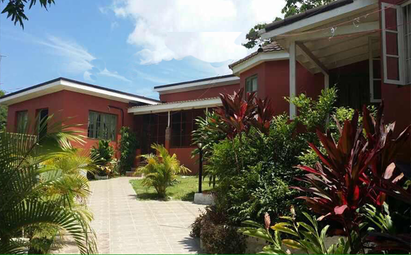

When you enter Portland you are entering the parish known to many Jamaicans as the birth place of Jamaica’s tourism. Who feel that Port Antonio's relative underdevelopment compared to the island's other resort towns, gives it a special charm. Its rural setting has been left untouched.
In the early 1900s the streets of Port Antonio were filled with tourists giving Portland claim to this title. In the 1940s and 50s, the parish of Portland, and in particular the town of Port Antonio, was the setting of numerous Hollywood films and a favourite destination for many Hollywood stars including Clara Bow, Rudyard Kipling , Ginger Rogers and Errol Flynn. Errol Flynn called Port Antonio heaven on earth and once owned nearby Navy Island after winning it in a game of poker or dominoes. It is said that he was so in love with the area he claimed he never met a woman as beautiful as Port Antonio. He also once owned Titchfield Hotel which boasted 600 feet of piazza and 400 rooms. The ruins of this once great hotel still stands today.
This small rural port is certainly a creative place. Robin Moore, the author of The French Connection, is said to have written the famous novel while sitting under a mango tree in Port Antonio.
Since the early 1950s, more than 782 film or screen productions have been shot in Portland. Two of the most popular are Twenty Thousand Leagues Under The Sea, by Walt Disney (USA) in 1954 and The Harder They Come by Vista Productions (Jamaica) in 1972. Scenes from the film Cocktail starring Tom Cruise were shot at the bar on the beach at the Dragon Bay resort. An early film edition of the 1963 version of The Lord Of The Flies was largely shot at Frenchman's Cove; Club Paradise starring Robin Williams; the 1990 remake by Harry Hook was filmed largely at Frenchman's Cove and Snow Hill. Rihanna filmed the video for her song 'Man Down' in various locations throughout the parish in April/May 2011. Even celebrity Pop singer Beyonce has been spotted rafting at the world famous Blue Lagoon.
Not only is this the birthplace of Jamaican tourism but also one of the few parishes that saw the rise of the banana. Portland's fortunes were to take a turn for the better in the late 19th century with the development of the banana industry. Portland's soil and heavy rains were well-suited to banana cultivation and almost any size farmer could grow banana for profit. Banana, a quick growing crop that can be ready to reap within a year, also had another advantage over sugar, it can be harvested throughout the year.
Lorenzo Dow Baker, the man credited with single-handedly jumpstarting banana production for export on the island, arrived in Jamaica in 1870. The island was experiencing a decline in sugar production and increased competition from beet sugar. Its protected market was gone. A new export crop was needed. Baker turned popular attention to the banana, long regarded as a source of local food, particularly for black Jamaicans slaves had been its main cultivators in their provision grounds. Famed botanist Sir Hans Sloane (who founded the British Museum) noted the existence of bananas in Jamaica from as far back as 1688.
A walk through its Portland’s streets today is like taking steps back in time. It is tranquil but with a hint of previous activity, past glory and future promise. Look out for the next instalment to find out what you can expect when staying with us.